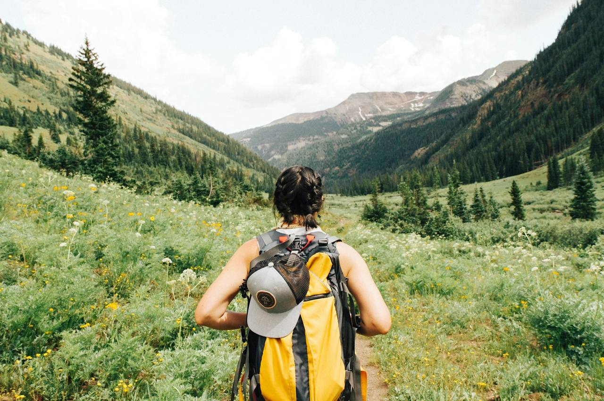
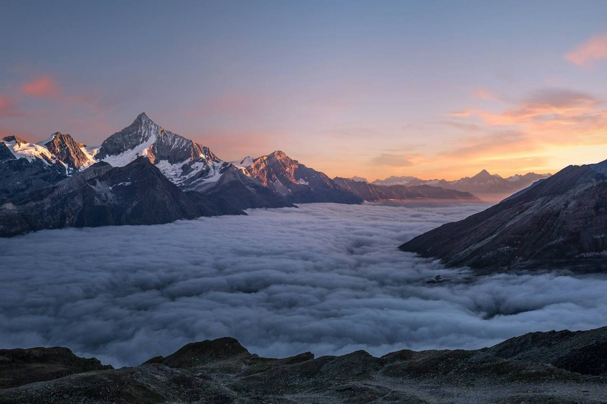
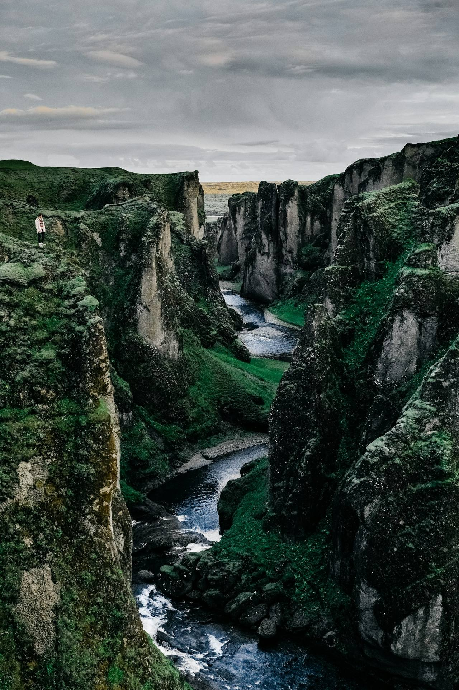
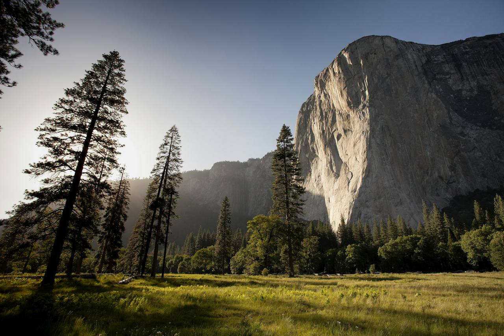
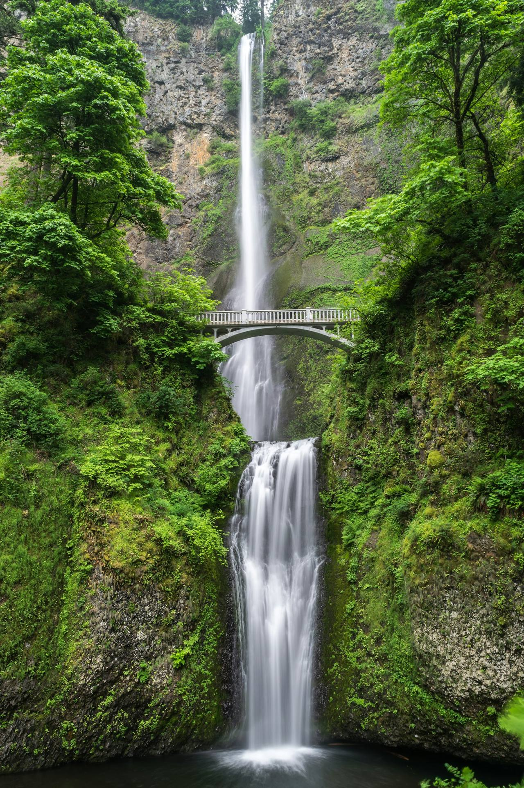
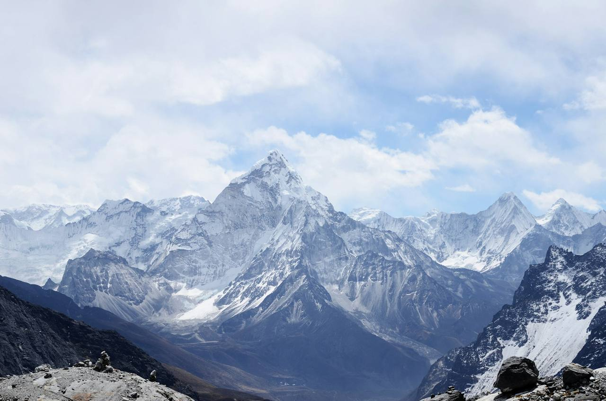
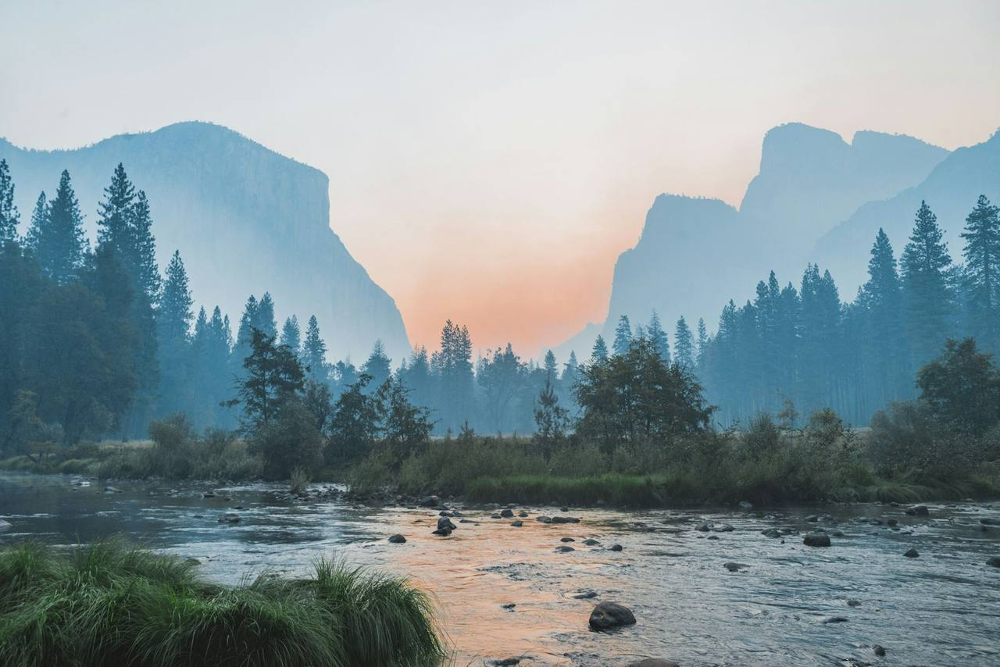

01 · Otago · Full day · Illustrative demo info
OTAGORidge to River
A full day of two halves: climb a schist ridge above the Shotover country, eat lunch at the saddle, then trade boots for a packraft and ride an easy braided river home. No retrace, no car shuffle for you.
The route
Up the spine, down the water.
The route changes with the season: river levels decide which braided channel we run. The shape of the day holds. Times below are a realistic mid-season sample.
Illustrative demo information
This is a fictional concept. Prices, routes and operating details are demo content only and describe no real service, certification or endorsement.
-
06:40
Pickup, Queenstown
We collect the group, check boots and layers, and run the plan and the forecast out loud before the wheels turn.
-
07:30
Trailhead, 900 m
Boots on at the end of a gravel road. The first hour is steady tussock and schist slabs, timed for shade.
-
09:30
The ridge line
Onto the spine. Views open down the whole catchment. The river you’ll ride later runs visible beneath you like a route preview.
-
12:00
Saddle lunch
A sheltered saddle, a hot brew from the stove and the biggest sandwich of your week. Seconds are mandatory.
-
13:30
Down to the put-in
A careful descent through scree and sweet briar to the river flats. Packrafts come out; helmets and a full safety brief go on.
-
14:30
River home
Two easy hours on gentle braided water: read the channels, race your crew, and let the valley do the navigating.
-
16:30
Take-out & back to town
Dry bags into the trailer, kit sorted, and back in Queenstown in time for a suspiciously earned pizza.
The practical bit
What’s included, what you bring.
Included
- Lead guide for the full day
- Packraft, paddle, PFD and helmet
- Dry bags and group waterproofing
- Group first aid and comms
- Saddle lunch and hot drinks
- Transport from central Queenstown
- Pack list and weather updates before the day
You bring tick it off
0 / 7 packed
Season & weather: read this before you book
Ridge to River runs October to April, when days are long and rivers sit at walkable levels. Spring can hold snow on the high line; we swap in a lower ridge if needed. Summer afternoons build wind and, some years, fire-risk closures; the go / no-go call is made by 5 pm the day before and rescheduling is free. Packrafting only runs on the day’s actual river levels: if the water is up, we finish on foot and refund the difference. No arguments.
Meeting point
Marine Parade boat ramp, Queenstown.
Look for the guide in the acid-yellow shell jacket beside the OUTBOUND van. Pickup is 06:40 sharp: the day is built around beating the midday wind, and the van leaves when it leaves.
- Pickup06:40 · central Queenstown pickup included
- Self-driveTrailhead parking is available; exact pin shared the day before
- Finish~17:00 back in town, traffic permitting
- Running late?Call the number on your booking note and we’ll hold the van as long as we honestly can
From the season
The evidence.









Before you ask
Straight answers.
How fit do I need to be?
If you can walk uphill for three hours with a day pack and enjoy it, you’ll be fine. The ridge is steady rather than steep, and the group sets a pace everyone can hold. Total moving time is five to six hours.
Do I need packrafting experience?
No. The river section is gentle, braided grade with no rapids worth naming. Every guest gets a PFD, helmet and a full on-shore brief, and the guide leads a demonstration lap before anyone pushes off.
What happens if the weather turns?
The go / no-go call is made by 5 pm the day before, based on the actual forecast, not hope. If we cancel, you reschedule free or take a full refund. If the river is too high to raft, we finish on foot and refund the rafting portion.
Is there a minimum age?
Sixteen, and under-18s come with a participating adult. The bigger limit is group size: eight guests maximum, one guide.
What should I wear?
Layers you can walk and paddle in: merino or synthetic next to skin, a warm mid-layer, and a rain shell. Cotton jeans are the one thing we’ll ask you to leave behind. The full pack list arrives with your booking note.
Can you cater for dietary requirements?
Yes. Tell us in the enquiry form and the saddle lunch adapts. Vegan, gluten-free and everything-between are routine.
Enquire
Put a day on hold.
Tell us your dates and how many are coming. We reply with availability, the current route plan and an honest weather read for your window.
- →Replies within two working days
- →No payment to enquire
- →Free rescheduling for weather calls
- →Groups of 4+ can request private dates